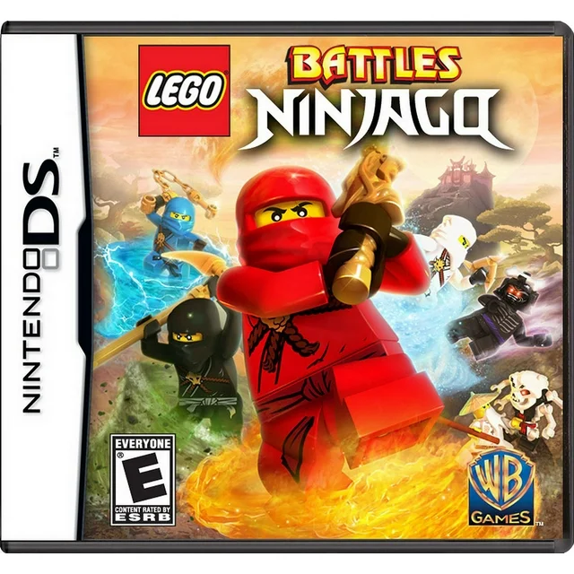
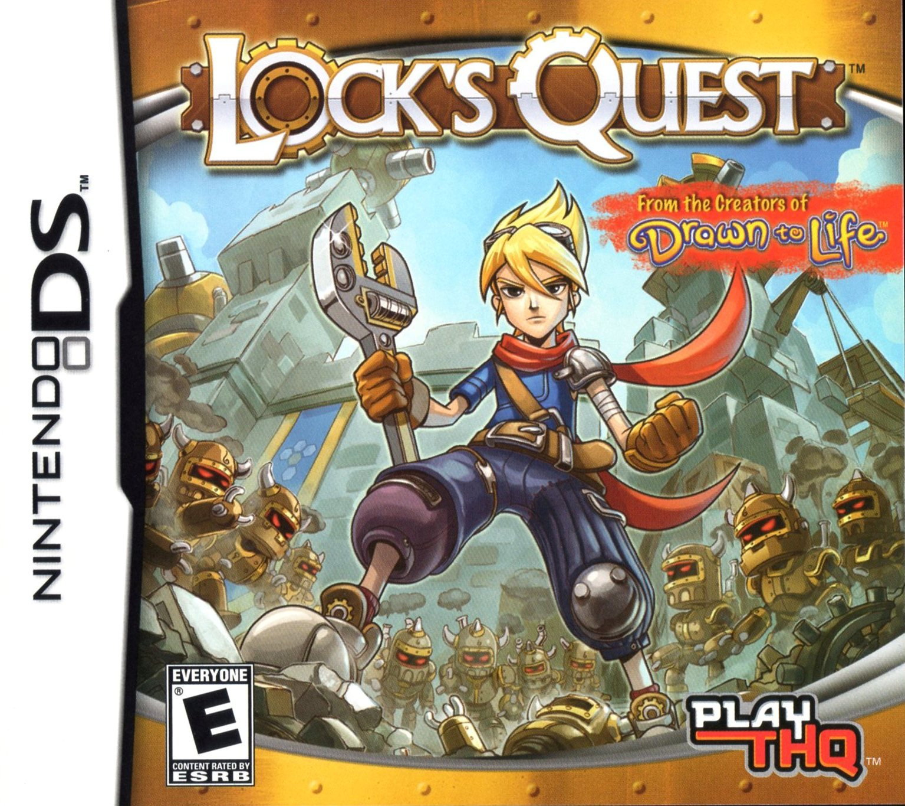
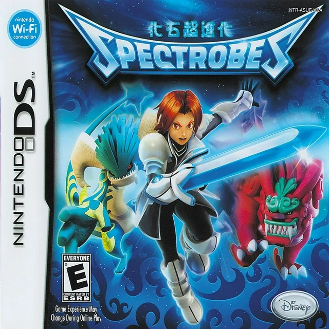
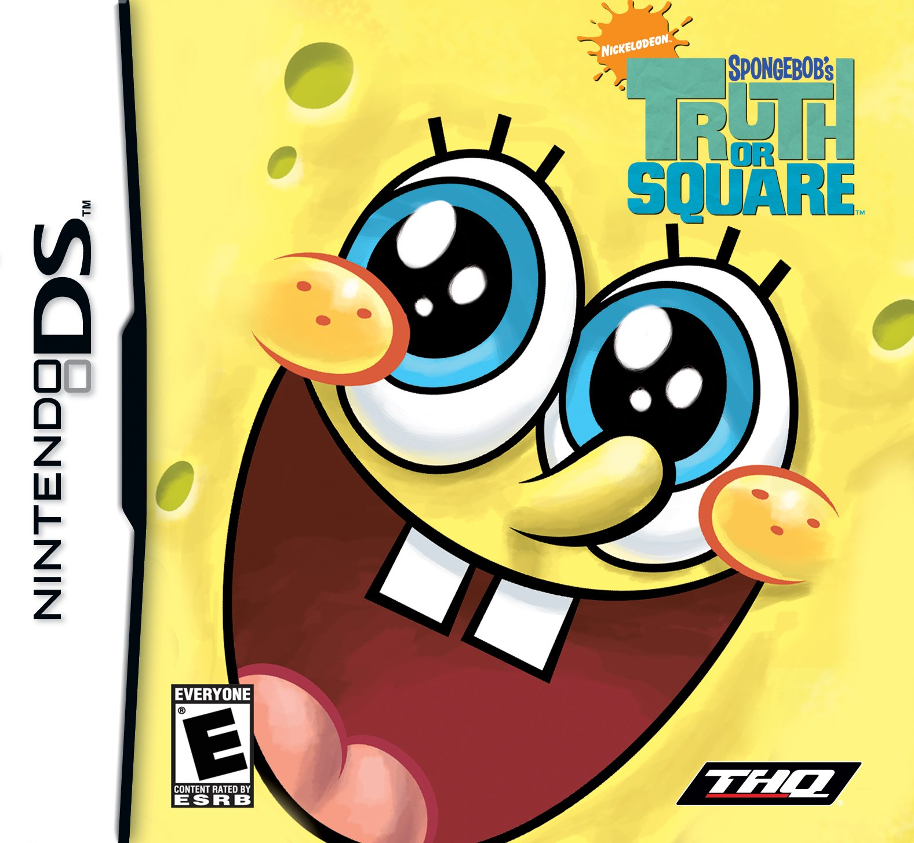
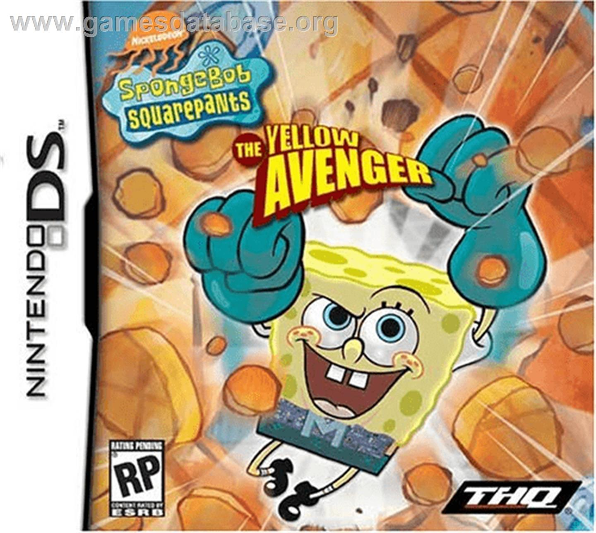

Drawn to Life; the next chapter

Featuring an innovative new action drawing feature and enhanced drawing tools, Drawn to Life: The Next Chapter gives players new creative tools and immerse them into new worlds they create and explore.
Lego Battles Ninjago
players will build an army and use Ninja fighting skills to overcome sinister Skeleton adversaries in the ultimate 1-2 player strategy action adventure.
Lock Quest
You play as Lock, a boy who stumbles upon an invasion of his Village, which triggers a wider war between Kingdom Force and a revived Clockwork Army, led by the nefarious Lord Agony. A gripping story unfolds as you progress through 75 Days of warfare, across a dozen unique maps, aided by a collection of turrets, traps and special attacks.
Spectrobes
As Junior Planetary Patrol officer Rallen, it falls to you to track down Spectrobe fossils, extract them from the rock without damaging them and bring the Spectrode back to life. Once a Spectrode has been extracted you must carefully feed and train it so that it evolves into a fully fledged fighter fit enough to take on the Krawl.
Spongebob Truth or Square
players must journey through memorable SpongeBob locations to find the missing Krabby Patty formula in time for the Krusty Krab's Eleventy Seventh Anniversary. From the Jellyfish Fields to downtown Bikini Bottom, players will run, jump, spin and hammer their way through 10 challenging levels.
Spongebob the Yellow Avenger
SpongeBob acquires Mermaid Man's powers when he wears his belt. Unfortunately, SpongeBob puts the Dirty Bubble into a washing machine, which causes him to split into countless dirty bubbles! SpongeBob has to stop villains such as Man Ray, the Sinister Slug, Jumbo Shrimp, Atomic Flounder, and the Dirty Bubble, using Mermaid Man's powers to save Bikini Bottom.